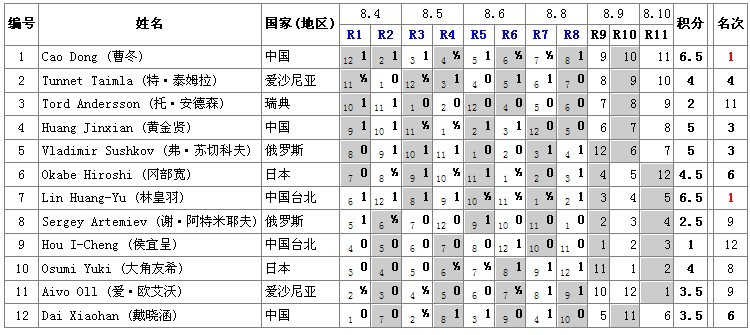

截止第8轮,冬瓜林皇羽6.5分领先，混混苏切5分随后
#1 截止第8轮,冬瓜林皇羽6.5分领先，混混苏切5分随后作者：雨一直下 发表时间：2011-8-9 9:03:46

上图来自励精教室
冬瓜林皇羽6.5分,冬瓜今天对候宜呈和大角友希,明天对爱伏,冠军相已经出现~~
林皇羽对安德森\混混,明天对苏切,不容乐观,拿分不易
混混5分,混混今天对岗部和林皇羽,明天对阿特米耶夫,个人看好混混拿分,继续赌他赢,唉现在是借钱赌博,越赌越来劲了.输金币没关系,金币身外物啊,不过仍然喜欢竞彩赌博并仍然爱金币,嘿嘿~~
苏切5分,今天对小天和岗部,明天对林皇羽,哼,诅咒他不得分
岗部4.5分,坦克4分,岗部下面三轮里两轮对混混和小天,也诅咒他
坦克对阿特耶夫\候宜呈\大角友希,倒看好他有可能拿分轻松.嗯嗯当然也不能让他拿分多了,影响中国棋手排名了,诅咒先暂不用,视情况而定,其实俺倒蛮喜欢坦克滴~好象也挺帅滴,也不老嘛.
小天3.5分,下面对苏切\爱伏\岗部,加油,努力拿下3分!
以上为个人意见,仅供参考~~
［此帖子已被 雨一直下 在 2011-8-9 9:06:18 编辑过］
#2 Re:截止第8轮,冬瓜林皇羽6.5分领先，混混苏切5分随后作者：掌棋如烟 发表时间：2011-8-9 9:07:26
开始诅咒了么...俺睡醒再说...#3 Re:Re:截止第8轮,冬瓜林皇羽6.5分领先，混混苏切5分随后作者：罔两 发表时间：2011-8-9 9:14:24
引用：
原文由 掌棋如烟 发表于 2011-8-9 9:07:26 :
真的没睡醒嘛？难道是梦游？难道是幻觉？？
#4 Re:截止第8轮,冬瓜林皇羽6.5分领先，混混苏切5分随后作者：慕容晓文 发表时间：2011-8-9 9:25:12
呵呵，坦克今年也只有23吧好像？
#5 Re:截止第8轮,冬瓜林皇羽6.5分领先，混混苏切5分随后作者：清缘 发表时间：2011-8-9 9:34:16
怎么戴晓涵和冈部宽一个是4.5，一个是3.5分，名次都是6#6 Re:截止第8轮,冬瓜林皇羽6.5分领先，混混苏切5分随后作者：炫飞冰弦 发表时间：2011-8-9 9:35:45
开坛作法#7 Re:截止第8轮,冬瓜林皇羽6.5分领先，混混苏切5分随后作者：三国老凯 发表时间：2011-8-9 9:50:50
小天 4.5了 ，。。#8 Re:截止第8轮,冬瓜林皇羽6.5分领先，混混苏切5分随后作者：小飞 发表时间：2011-8-9 9:55:51
开始发功……#9 Re:截止第8轮,冬瓜林皇羽6.5分领先，混混苏切5分随后作者：傀儡 发表时间：2011-8-9 10:00:24
让中国棋手全胜吧~~~~
#10 Re:截止第8轮,冬瓜林皇羽6.5分领先，混混苏切5分随后作者：不知取何名 发表时间：2011-8-9 10:01:18
 这个是不是填错了啊
这个是不是填错了啊#11 Re:截止第8轮,冬瓜林皇羽6.5分领先，混混苏切5分随后作者：寒风囚月 发表时间：2011-8-9 12:36:28
。。加油#12 Re:截止第8轮,冬瓜林皇羽6.5分领先，混混苏切5分随后作者：我爱江俊男 发表时间：2011-8-9 14:42:21
开始作法！！！！！！！！！！！#13 Re:截止第8轮,冬瓜林皇羽6.5分领先，混混苏切5分随后作者：雨一直下 发表时间：2011-8-9 15:25:34